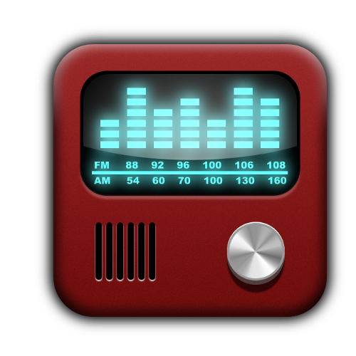

Radio Online

Clique aqui para iniciar
Não existe conexão com a Internet
Clique aqui para voltar
mute
max volume
previous
play
stop
next
repeat
shuffle
Update Required
To play the media you will need to either update your browser to a recent version or update your
Flash plugin
.
Radio Online
Não existe conexão com a Internet